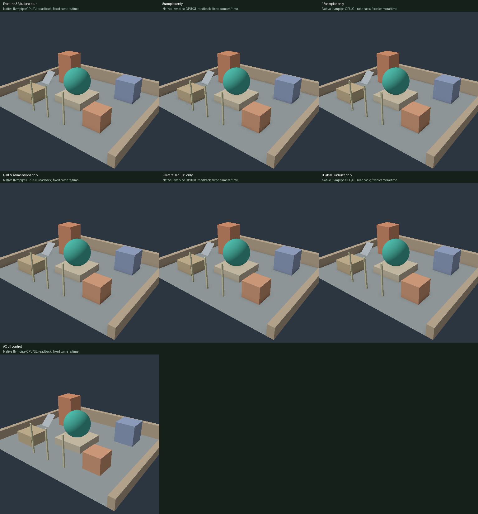
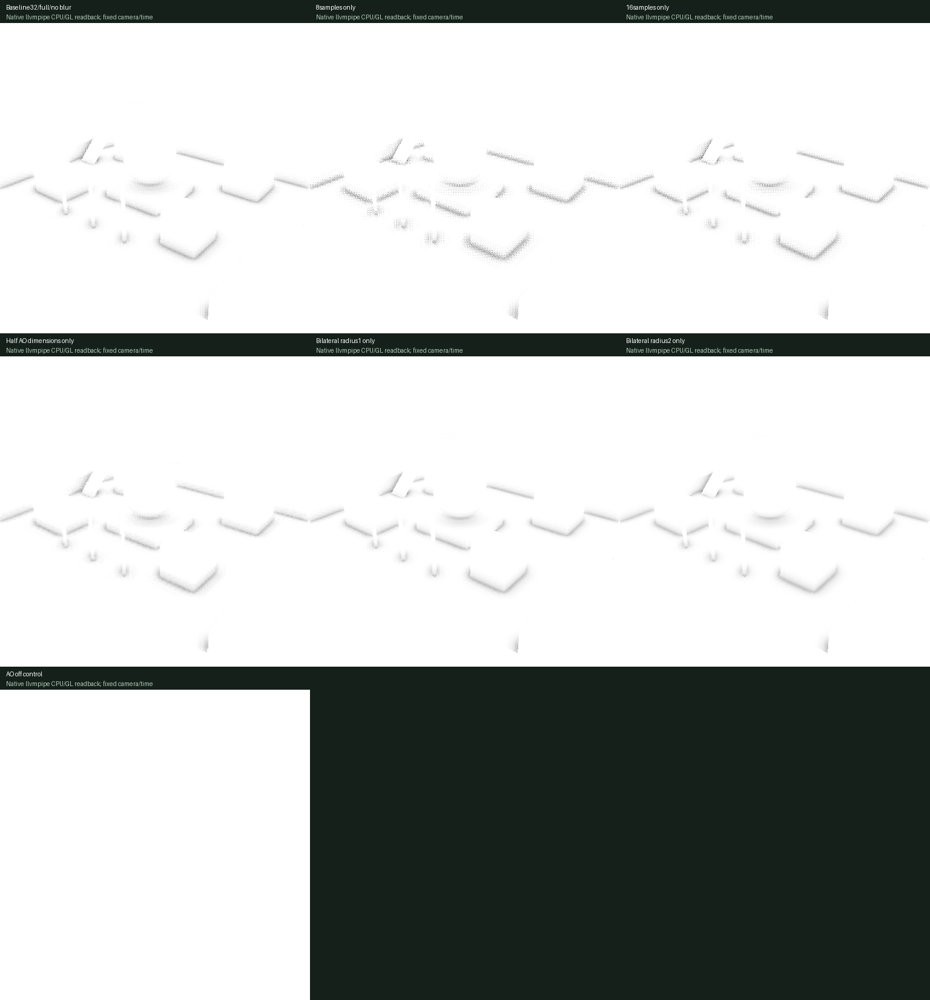
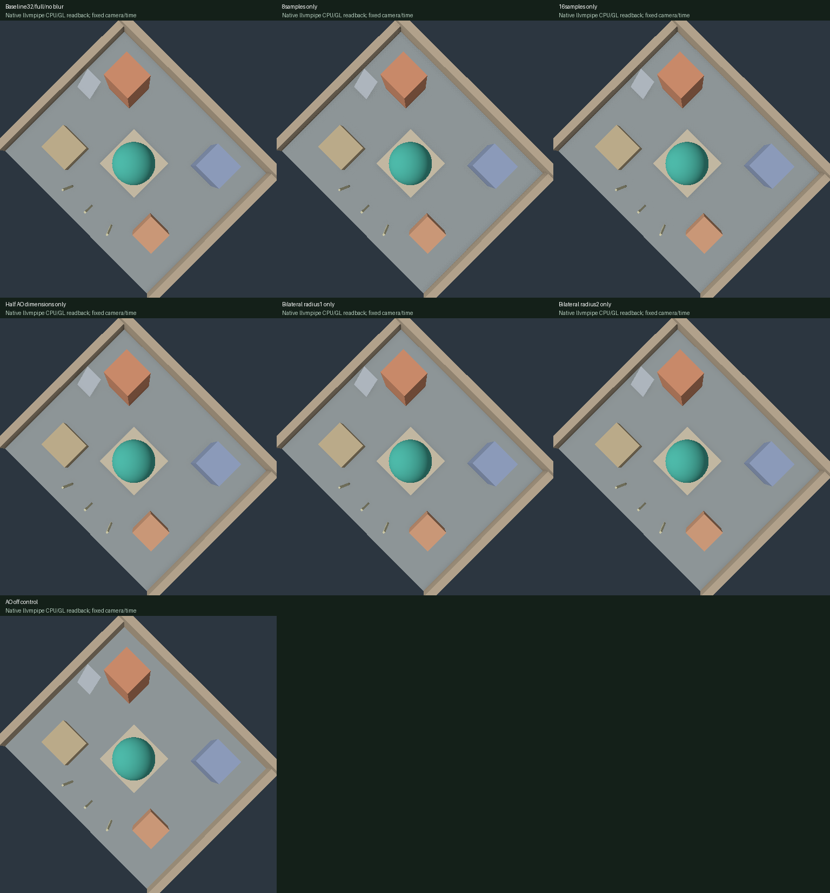
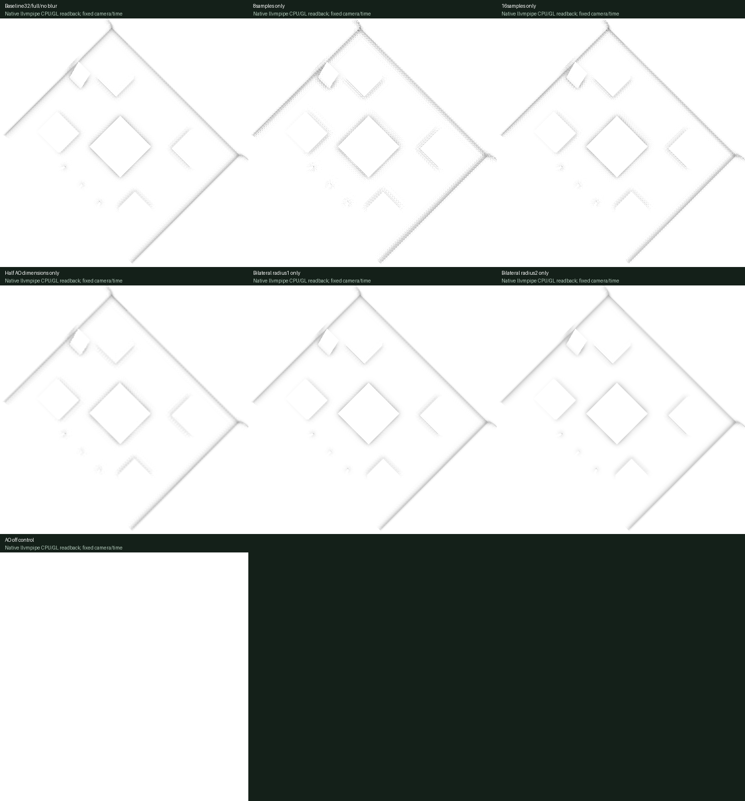
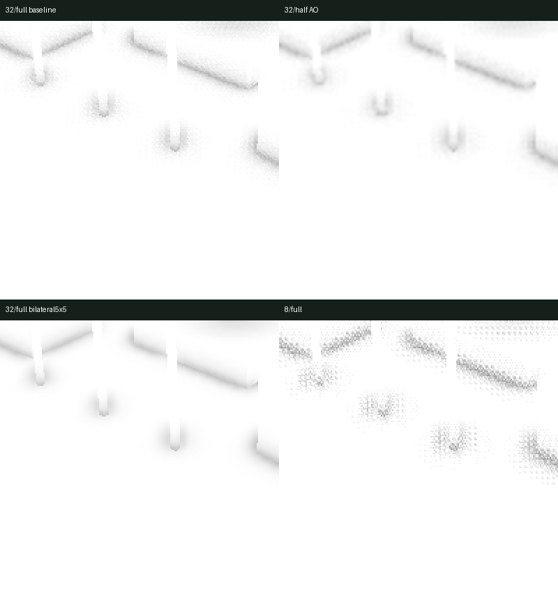
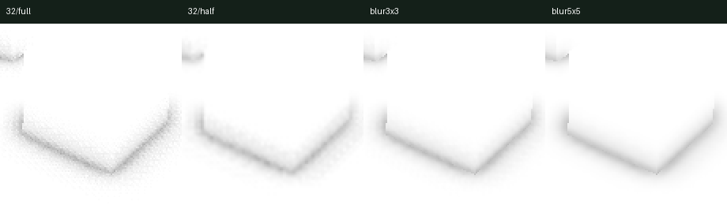
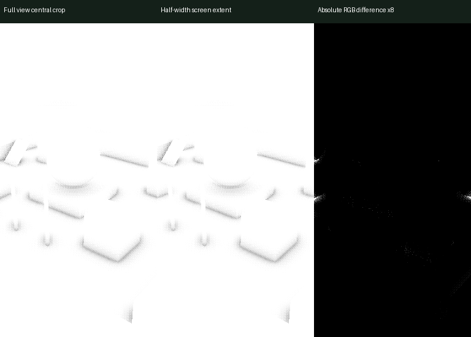

007 / SSAO の品質とコスト
結論と範囲
固定した手続き生成の中庭に、ワールド座標の位置・法線プリパス、半球内のサンプルを使う AO、任意で有効にできる joint bilateral blur を実装しました。AO は環境光だけに合成します。
ここで示す画像と反復計測した時間は、release ビルドのネイティブ・オフスクリーン環境で得たものです。llvmpipe CPU・OpenGL を使って、描画結果を実際に読み戻しました。ハードウェア GPU のタイムスタンプ、実ブラウザーの FPS、Android の性能を測った結果ではありません。FlightHelmet への接続は、issue6 の条件を揃えた参照ベースラインが用意できるまで行いません。
フル解像度・32 samples・ぼかしなしを固定した比較基準としました。サンプル数を 8/16 にする、AO の各辺を 50% にする、ぼかしの radius を 1/2 にする、という変更を一つずつ試しています。AO-off はコストを比較するための別の対照条件です。カメラ 2 条件 × 7 設定 × final/AO-only = 28 条件を測り、30 samples/条件、合計 840 samples を記録しました。32 samples の画像も正解画像ではないため、差分を品質誤差とは呼びません。
固定条件と実装
- 表示解像度と内部解像度は 512×512、scale は 100%、MSAA はなし、time は 0 です。全設定で 1297 vertices/1976 triangles の同じ形状を使い、カメラ・光源・マテリアル・深度・法線も揃えています。
- Camera0 の eye は [8.2,6.8,10.5]、camera1 は [0.1,17,0.1] です。target は [0,0.6,0]、FOV は 45°、near は 0.1、far は 100 です。light は normalize[-0.6,1,0.5] に固定しています。
- Radius は 0.7 world units、strength は 1.3、view-depth bias は 0.03、noise seed は 17 です。フル内部解像度の G-buffer のピクセルを単位とする 4×4 タイルの整数ハッシュで、カーネルを回転します。半解像度の AO ピクセル単位ではありません。固定した 32 点カーネルの先頭 8/16/32 点を使い、個数を変えても既存サンプルの方向・距離は変えません。
- 位置と法線はフル内部解像度の RGBA16Float×2 に保存し、position.w=coverage とします。カメラの深度は Depth32Float です。AO には RGBA8Unorm を使い、ぼかし前とぼかし後の 2 枚を保持します。
- ワールド座標のサンプルを同じカメラで投影します。位置バッファーを最近傍で読み込み、透視投影の clip.w を視点からの深度として比較します。距離による重みは、ワールド空間の距離に基づく smoothstep です。投影範囲外と背景のサンプルは非遮蔽として扱い、分母には常に設定したサンプル数を使います。
- ぼかしは 3×3 または 5×5 で、重みは weight=exp(-world distance×20)×max(normal dot,0)^8 です。AO 解像度で処理するため、各辺が半分の設定では同じカーネルでも画面上の幅が 2 倍になります。半解像度とぼかしの組合せは、今回の一要因ずつ変更する OFAT 測定に含めていません。
- AO の復元には常に線形の visibility 値を使うバイリニア補間を用います。形状を考慮した拡大処理ではありません。final では ambient 0.22 だけに AO を掛け、direct Lambert 0.78 は保持します。AO-only は最終的に sRGB で表示するため、グレーの byte 値を物理的な visibility 値とは解釈しません。
別々に保存した final と AO-only
Camera0


Camera1


各設定の PNG 28 枚について、画像一覧にパス・ハッシュ・設定を記録しています。上の比較パネルは保存画像をそのまま配置し、見やすいラベルだけを追加しました。
ノイズ・ハロー・細い形状

camera0 の [80,270,280,470] を最近傍で 2 倍に拡大しています。8 samples では床と接触領域で粒状のノイズと、繰り返すタイル模様が強く見えます。サンプル数を 16→32 に増やしても、有限個のサンプルによるノイズは残ります。32/full の blur radius1 は粒を弱めます。radius2 はさらに滑らかにする一方、接触部の細部と暗さの分布を広げます。ぼかしはサンプル数を増やす処理でも、隠れた形状を正しく復元する処理でもありません。
半解像度の AO では、床の接触領域が大きな粒と柔らかい輪郭に変わります。細い柱の白いシルエットと暗い根元も平均化されます。フル解像度の位置・法線を保持しても、AO のサンプルピクセルで形状の被覆情報が失われることと、バイリニア補間による拡大は変わりません。細い形状の印象が維持されるという保証はありません。

前景の箱の [250,295,365,410] を最近傍で 2 倍に拡大しています。半解像度の AO では輪郭付近のグレーが広がり、前景へ暗さが漏れるハロー状の縁と、接触部の曖昧さが見えます。バイラテラルぼかしは位置・法線が異なる部分をまたぐ平滑化を抑えます。ただし、最後のバイリニア補間は深度を考慮しないため、輪郭をまたぐ補間を完全には防げません。すべてのグレーの帯を誤差と言い切れる正解データはありません。ここでは、見える症状と実装上の制限を記録します。
画面端とスクリーン空間の制限

左は 512×512 の AO 画像の中央 x128..383 です。中央は同じカメラの投影の x 成分を 2 倍にして、256×512 に描いた画像です。両者のピクセルが表す範囲は揃えています。ビューポートの外になった形状は AO に寄与できません。右は表示 RGB 差の絶対値×8 で、黒は同一を表します。AO では 833 pixels /131072 が変化し、最大 channel 差は 57 でした。シーンやカーネルは変更していません。
左右の外側 32 pixel の帯に限定すると、706 pixels が変化しました。すべて明るい側への変化で、最大 channel 差は 57 です。この帯には、画面外の形状を参照できない影響が特に明確に表れています。内側には小さく暗くなる差もあり、サンプリングやラスタライズの量子化の影響も含みます。
別の AO-off 対照条件では、差があったのは 2 pixels だけで、最大 channel 差は 73 でした。ビューポートでのクリッピングによるラスタライズの被覆範囲や丸めの差が完全に 0 ではないため、AO の差をすべて画面端の偏りだけによるものとは言い切りません。差分は機械可読記録にも保存しています。
投影範囲外のサンプルを非遮蔽として扱い、固定した個数で割るため、画面端では AO が明るく薄くなります。画面内でも最前面の位置しか持たず、物体の裏側・隠れた面・画面外の遮蔽物は見えません。カメラを変えると AO も変わります。ここで検証したのは、レイトレーシングによる AO や正解 AO、GTAO、multi-layer AO、時間方向のノイズ除去ではありません。
パス数とメモリーの内訳
| 条件 | AO pass | Blur pass | Geometry prepass | Final pass | Native共通upsample | Extra retained bytes/slot |
|---|---|---|---|---|---|---|
| Full32, blur off | 1 | 0 | 1 | 1 | 1 | 6291456 (6MiB) |
| Half AO32, blur off | 1 | 0 | 1 | 1 | 1 | 4718592 (4.5MiB) |
| Full32, blur radius1/2 | 1 | 1 | 1 | 1 | 1 | 6291456 (6MiB) |
| AO off, full setting | 0 | 0 | 0 | 1 | 1 | 6291456 retained |
各パスの描画は 1 draw です。final は通常のインデックス付き形状を、AO-only は全画面の三角形を描きます。Web では最後の拡大・合成パスを A/B で共有し、2 draw を実行します。上表のネイティブ環境では、単一スロットで 1 draw です。
追加 bytes = 16×internalW×internalH + 8×aoW×aoH です。半解像度では各辺が 50% なので AO 面積は 25% になります。ただし、フル解像度の位置・法線が容量の大部分を占めるため、追加メモリー全体は 75% までしか減りません。base color/depth/output、geometry/uniform、アラインメント、ドライバーによる確保は含みません。Off でも既存ターゲットを保持し、新しいデバイスや寸法では初回の初期化が必要です。通常動作中にパスを省くことと、常駐メモリーを解放することは別です。
AO パスで投影した位置バッファーを参照する回数の予算は、設定に応じて 8/16/32 です。投影範囲外などでは早期に continue します。中心の位置・法線の読み込みなどは別に加わるため、この予算はパス全体のテクスチャー参照総数ではありません。ぼかしでは最大 9/25 tap で位置・法線と AO を参照します。これらはフラグメント数やハードウェア帯域を計測した値ではありません。
ネイティブ環境での反復計測
4 warmups の後に 10 samples を測る手順を、3 repeat 実行しました。順序は forward/reverse/half-rotation です。タイマーでは encode+finish、queue.submit、送信ごとの poll wait を分けて記録します。uniform の書き込み、target/pipeline の確保、描画結果の読み戻し、surface acquire/present は計測に含みません。
測定値はキュー待ちを含む CPU の経過時間です。GPU タイムスタンプを測っていない欄に値は補いません。単一プロセスで submit/wait を順次行うため、ブラウザーのフレーム間隔を表すものでもありません。
| Camera / final condition | Encode median ms | Total wall median ms | Total p95 ms | Repeat median min–max ms |
|---|---|---|---|---|
| 0 / Baseline32/full/no blur | 0.099 | 12.200 | 35.238 | 9.090–20.515 |
| 0 / 8samples only | 0.065 | 6.672 | 12.784 | 6.036–7.330 |
| 0 / 16samples only | 0.072 | 8.833 | 23.987 | 6.947–17.174 |
| 0 / Half AO dimensions only | 0.056 | 5.963 | 12.050 | 5.450–9.208 |
| 0 / Bilateral radius1 only | 0.112 | 13.438 | 26.755 | 12.072–22.468 |
| 0 / Bilateral radius2 only | 0.085 | 15.833 | 20.247 | 15.417–18.562 |
| 0 / AO off control | 0.030 | 1.791 | 4.930 | 1.586–2.025 |
| 1 / Baseline32/full/no blur | 0.057 | 11.763 | 12.689 | 10.246–12.192 |
| 1 / 8samples only | 0.044 | 6.043 | 6.563 | 6.024–6.123 |
| 1 / 16samples only | 0.055 | 7.743 | 8.871 | 7.373–8.154 |
| 1 / Half AO dimensions only | 0.052 | 6.132 | 7.397 | 5.895–6.440 |
| 1 / Bilateral radius1 only | 0.075 | 14.067 | 17.564 | 12.790–15.085 |
| 1 / Bilateral radius2 only | 0.075 | 17.918 | 27.227 | 15.984–19.414 |
| 1 / AO off control | 0.031 | 1.828 | 2.642 | 1.730–1.884 |
全 final/AO-only の記録は、840 samples の元データ、repeat 別の median/p95、全 repeat をまとめた集計から確認できます。ネイティブのソフトウェアラスタライザーは、CPU 競合・シェーダーコンパイラー・OS のスケジューリングの影響を受けます。ハードウェア GPU 上の大小関係や比率を予測する根拠にはしません。
品質とコストから見た次の候補
品質を重視する次の候補は、full32 + bilateral radius1 です。この静止シーンでは、ぼかし前の 32 samples の粒状ノイズを弱めます。ただし、追加パスが必要で、時間方向の安定性や別シーンの品質は未検証です。radius2 はさらに柔らかくなり、細い接触部を弱めるため、無条件の改善とはしません。
コストを重視する次の候補は、halfAO32/no blur です。今回のネイティブ環境では、全 repeat をまとめた総経過時間の中央値が低くなりました。一方で、細いシルエットとハローとの引換えになることがはっきり見えます。追加メモリー全体も 25% 減にとどまります。
サンプル数だけを変える候補は、full16/no blur です。8 samples より粒状ノイズが弱く、全 repeat をまとめた経過時間の中央値は 32 samples より低い値でした。ただし camera0 の repeat3 では、16 samples が 17.174ms、32 samples が 13.026ms と順序が逆転しており、測定値の揺れは大きい状況です。8/no blur は粒が目立ち、特に AO-only で確認できます。final は環境光だけに AO を掛けるため、差が小さく見えます。
AO-off はコスト下限の対照条件です。接触部の奥行き感を同じ品質で維持する代案とはしません。また、複数の要因を組み合わせた最良設定は、この OFAT 結果だけからは選びません。
検証した範囲と制限
ネイティブ共通の本番用パスで、独立した A/A を同時に描いた結果は、28 条件すべてで byte 単位で一致しました。B だけ samples/resolution/blur/on/debug を変えても A は不変でした。encode の順序を逆にしても一致し、A を変更したときの B、別途編集した B のシェーダーを使ったときの A も不変でした。AO ターゲットの解像度・設定を戻すと、結果は元に戻りました。不正な WGSL と誤った binding ABI は、pipeline batch の作成時に拒否されました。
これらはオフスクリーンテストです。実際の Core surface 構成、ブラウザーのリサイズ、device lost、ネイティブウィンドウ操作を実行した証拠ではありません。
Web では WASM build/check に加え、WASM をモックに置き換えた JS で、操作コントロール・ロールバック・コンパイルロック・計測ロック・下書き保持・メタデータを検証しました。実ブラウザー GPU または Android での操作は未検証です。既存の PBR 検証とシャドウの検証は別であり、組合せが完成したとはしません。
検証 JSON、固定条件のメタデータ、測定ソースのスナップショットとハッシュを保存しています。ソースのスナップショットには、コンパイラーで埋め込んだ実行時ソースのハッシュを記録しています。現在のソースと一致しない場合、レポート生成スクリプトは処理を拒否します。過去のレポートの測定ソースのスナップショットは書き換えません。
再現
RENDERING_LAB_SSAO_OUT="$PWD/evidence/ssao-native" cargo test --locked --release -p rendering-core --test ssao_smoke -- --ignored --nocapture
python3 scripts/build-ssao-evidence.py
python3 scripts/build-ssao-evidence.py --check
python3 scripts/build-ssao-evidence.py --self-test
生成スクリプトは、条件一覧の厳密な一致、ソースのハッシュ、840 samples の順序、時間が有限かつ非負であること、計測成分の合計、画像寸法、AO-off 時の白色を検証します。--self-test は一時コピーに不正値・重複・欠落を入れ、拒否されることを確認します。実際の測定データは変更しません。